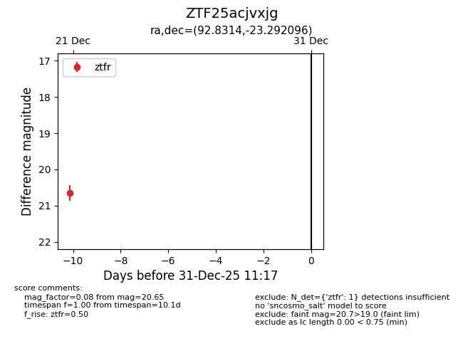
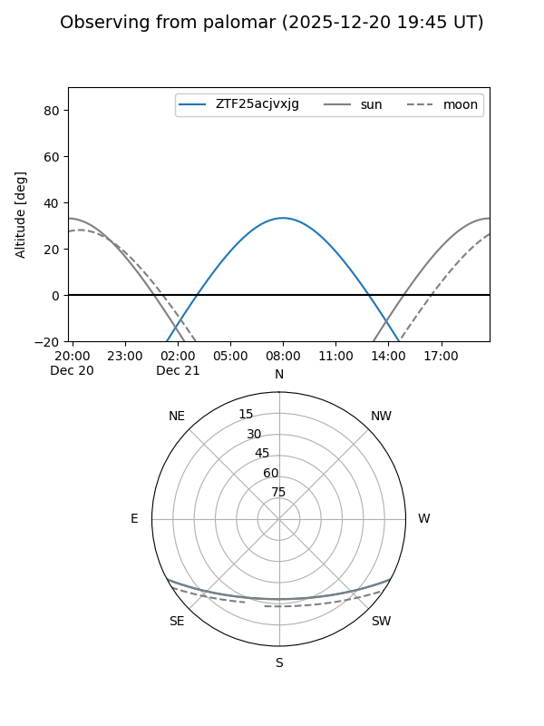

ZTF25acjvxjg
Target ZTF25acjvxjg at 2025-12-21 08:28
Aliases and brokers:
FINK: fink-portal.org/ZTF25acjvxjg
Lasair: lasair-ztf.lsst.ac.uk/objects/ZTF25acjvxjg
ALeRCE: alerce.online/object/ZTF25acjvxjg
alt names
ZTF25acjvxjg (ztf,fink_ztf)
Coordinates:
equatorial (ra, dec) = 92.8314,-23.29210
equatorial (HMS+DMS) = 06:11:19.54,-23:17:31.55
galactic (l, b) = (230.0746,-18.82318)
Flags:
Photometry:
last ztfr=20.65
1 ztfr detections
Lightcurve

Visibility


Additional plots